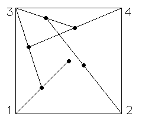
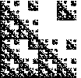

Here we study the random IFS algorithm, another way to render IFS images. This includes a careful
look at what random means. We continue our survey of fractals in architecture.
| To motivate the Random IFS algorithm, we begin with the
Chaos Game. |
| Here we observe the apparent effect of randomness is to guarantee
the points dance across the picture to be generated. |
|
 |
| Here is an alternative way to
simulate a long run of the chaos game, and some
examples. |
| Superimposing many short runs of the chaos game gives a picture very much like a
single long run of the chaos game. |
|
 |
| Here is the Random IFS algorithm. |
| We show the Random IFS algorithm is a generalization of the chaos game. |
| Then we show that the random IFS and the deterministic IFS algorithms generate the same pictures. |
| A key ingredient of this argument is the notion of addresses of regions in a fractal. |
|
 |